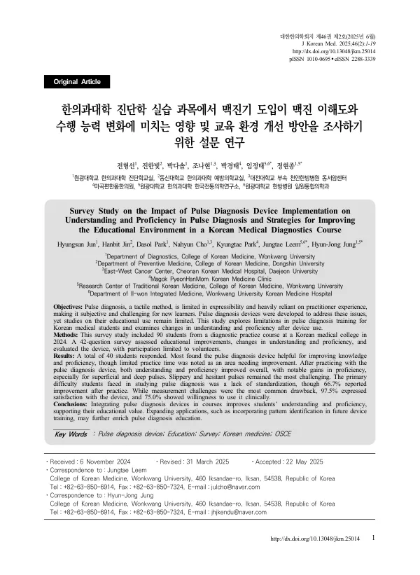

Survey Study on the Impact of Pulse Diagnosis Device Implementation on Understanding and Proficiency in Pulse Diagnosis and Strategies for Improving the Educational Environment in a Korean Medical Diagnostics Course
Jun H, Jin H, Park D, Cho N, Park K, Leem J, Jung HJ
Journal of Korean Medicine 46(2):1-19

첫 장 · 오픈액세스First page · open access
논문 소개Summary
맥진은 손끝의 감각으로 하는 진단이라 결과를 말로 옮기거나 남과 나누기 어렵고 한의사의 경험에 크게 기댑니다. 처음 배우는 학생에게는 그만큼 막막합니다. 이를 객관화하려고 1968년 이후 여러 맥진기가 개발되었지만 교육에 써 보고 효과를 확인한 연구는 거의 없었습니다. 국내 맥진 연구 251편 가운데 한의사의 맥진 훈련을 다룬 것은 4편뿐이고, 학생이 무엇을 어려워하는지 살핀 연구는 없었습니다.
2024년 한의과대학 진단학 실습에 3차원 맥영상 검사기기를 넣고, 실습에 참여한 90명 가운데 자발적으로 응한 40명(44.45%)에게 42문항을 물었습니다. 이해도와 수행 능력은 0~10점 척도로 실습 전후를 스스로 매기게 했습니다.
모든 응답자가 맥진기 실습이 맥진 지식 향상에 도움이 되었다고 답했고 92.5%는 술기 수행 능력에도 도움이 되었다고 했습니다. 실습 전에는 이해도(4.30점)보다 술기 능력(3.45점)이 낮았는데, 실습 뒤 향상 폭은 술기 능력(3.15점)이 이해도(2.78점)보다 컸습니다. 맥의 종류로 보면 부맥과 침맥이 가장 크게 좋아졌고 지맥과 삭맥은 변화 폭이 가장 작았지만 원래 점수가 가장 높았습니다. 활맥과 삽맥은 실습 전후 모두 가장 낮아 끝까지 어려운 맥으로 남았습니다.
왜 그런지도 함께 설명했습니다. 지맥과 삭맥은 한 번의 호흡에 세 번 또는 여섯 번 박동한다는 식으로 셀 수 있는 기준이 고전에 있고 맥진기도 분당 박동수로 가릅니다. 반면 활맥과 삽맥은 구슬이 빠르게 왕래하는 것 같다는 식으로 추상적이고, 맥진기에서도 맥파 형태와 주파수 등 여러 요소를 종합해 판단합니다. 실습 중 제출된 보고서에 활맥이 한 번도 나오지 않아 직접 겪어 보지 못한 점도 겹쳤습니다. 맥진 공부에서 가장 어려운 점으로는 표준화 부족에 따른 일관성 저하가 꼽혔고 실습 뒤 66.7%가 개선되었다고 답했습니다. 만족도는 97.5%, 임상에서 쓸 의향은 75.0%였습니다.
실습 환경에서는 시간이 부족하다는 응답이 55.0%였습니다. 1인당 사용 시간은 평균 5~10분이었으나 학생들이 생각한 적정 시간은 16.7±14.6분이었습니다. 저자들은 90명을 45명씩 두 분반으로 나눠 2시간씩 실습한다면 1회당 맥진기가 최소 7대는 필요하다고 계산했습니다. 한계로는 단일 기관이라는 점, 응답률 44%에 따른 선택 편향, 타당화되지 않은 자체 설문지, 객관적 평가 도구 없이 주관적 자기평가에 의존한 점을 들었습니다.
Pulse diagnosis is made through the fingertips, which makes its result hard to put into words or share with anyone else and leaves it heavily dependent on the practitioner's experience. For a student meeting it for the first time, that is a wall. Pulse diagnosis devices have been developed since 1968 to make it objective, but almost no study has put one into a course and checked what it does. Of 251 domestic studies on pulse diagnosis, only four addressed training practitioners, and none examined what students find difficult.
A three-dimensional pulse imaging device was introduced into a 2024 diagnostics practicum at a college of Korean medicine, and 42 questions were put to the 40 volunteers (44.45%) among the 90 students who took the course. Understanding and proficiency were self-rated before and after on a 0-to-10 scale.
Every respondent said the device practice improved their knowledge of pulse diagnosis, and 92.5% said it improved their proficiency as well. Before practice, proficiency (3.45) trailed understanding (4.30); afterwards the gain in proficiency (3.15) exceeded the gain in understanding (2.78). By pulse type, superficial and deep pulses improved most, while slow and rapid pulses changed least — though they had started highest. Slippery and hesitant pulses ranked lowest both before and after, remaining the hardest to the end.
The paper explains why. Slow and rapid pulses come with countable criteria in the classics — three beats per breath, six beats per breath — and the device likewise sorts them by beats per minute. Slippery and hesitant pulses are described in figures like beads running swiftly past one another, and the device judges them by combining waveform, frequency and other elements. No slippery pulse appeared in any report submitted during the practicum, so the students never met one. The greatest difficulty in studying pulse diagnosis was inconsistency from lack of standardisation, and 66.7% said this improved after practice. Satisfaction with the device was 97.5% and willingness to use it clinically 75.0%.
On the training environment, 55.0% said the time was insufficient. Each student had the device for an average of 5 to 10 minutes, against the 16.7 ± 14.6 minutes they considered appropriate. The authors calculate that splitting 90 students into two sections of 45 for two hours each would require at least seven devices per session. Limitations given are the single institution, selection bias from a 44% response rate, an unvalidated in-house questionnaire, and reliance on subjective self-rating in the absence of any objective assessment tool.
인용Cite
Jun H, Jin H, Park D, Cho N, Park K, Leem J, Jung HJ. Survey Study on the Impact of Pulse Diagnosis Device Implementation on Understanding and Proficiency in Pulse Diagnosis and Strategies for Improving the Educational Environment in a Korean Medical Diagnostics Course. Journal of Korean Medicine. 2025;46(2):1-19. doi:10.13048/jkm.25014